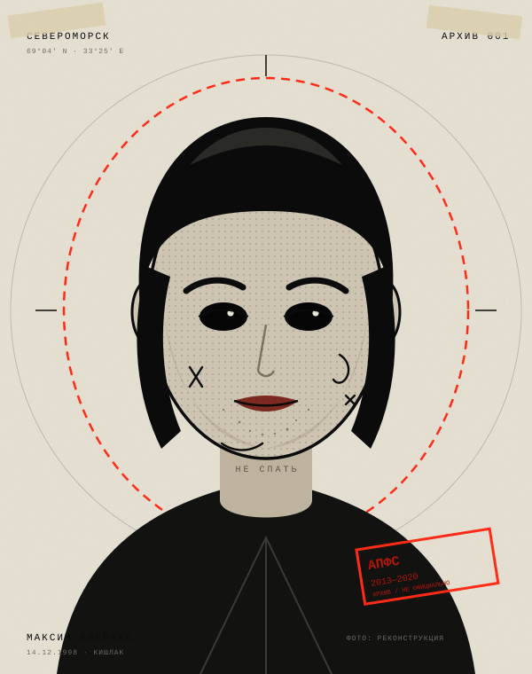

19980 лет
Мурманск. Долгожданный ребёнок
Родился 14 декабря. Мать долго лечилась, чтобы забеременеть. Отец и дед страдали алкоголизмом; насилие в семье стало одним из первых воспоминаний Максима.
Максим Сергеевич Фисенко. Родился 14 декабря 1998 года в Мурманске, вырос в Североморске. Музыкант, который превратил собственную биографию в один длинный трек — с перерывами на тишину.

Максим Фисенко родился 14 декабря 1998 года в Мурманске. Его мать долго лечилась, чтобы забеременеть, — он был долгожданным ребёнком. Но атмосфера в семье оказалась тяжёлой: отец и дед пили, в доме случались приступы агрессии. Когда Максиму было около двух лет, мать ушла от отца и переехала с сыном в Североморск — закрытый военный городок на Кольском полуострове.
Там прошло почти всё детство: несколько домов, один магазин, школа № 12, длинные волосы, травля, эмо-культура и музыка. Район Авиагородок местные называли «кишлак». Слово прилипло к Максиму и позже стало псевдонимом — не эстетическим выбором, а адресом.
В 14 лет он начал записывать треки на диктофон планшета: микрофона не было, обработка была минимальной, зато было много злости и желания доказать, что он тоже что-то может. С этого начались «Bisexual From The Village», «Солнечный Муслим», «Русалочье урочище», «писък» и главный проект первой эпохи — «Автостопом по фазе сна».
«Мне кажется, что судьбой управлять невозможно. Дважды чуть не сел в тюрьму, несколько раз мог уйти из жизни — и меня всё толкало к тому, что я стою здесь». Максим Фисенко · интервью Artchange
Сегодня Кишлак — один из самых заметных голосов российской эмо-сцены. За этим стоят не только альбомы и стадионы, но и автомойка, колледж, работа поваром в военной части, уголовные эпизоды, диагноз, татуировки на лице, кодировка и долгий разговор о трезвости, который продолжается до сих пор.
Не «путь к успеху», а последовательность выживания. Даты восстановлены по интервью, релизам и публикациям; часть из них — приблизительные.
Родился 14 декабря. Мать долго лечилась, чтобы забеременеть. Отец и дед страдали алкоголизмом; насилие в семье стало одним из первых воспоминаний Максима.
Мать уходит от отца и переезжает с сыном в закрытый военный городок. Квартиру приходится отбивать у прежних жильцов; ремонт, теснота, суровый климат. На время ремонта Максим живёт у бабушки с дедом в деревне — эти два года он вспоминает как самые спокойные.
Учёба на тройки, буллинг за внешний вид, порванный портфель, равнодушие учителей. Три близких друга, брейк-данс, уличная акробатика, гитара. В 13–14 лет — увлечение straight edge: отказ от алкоголя, сигарет и наркотиков как попытка не повторить семейный сценарий.
Записывает музыку на диктофон планшета, придумывает «Автостопом по фазе сна». В ноябре выступает под именем Bisexual From The Village — первый выход на сцену. Песни «Субкультура» и «История несчастной любви» расходятся по узким кругам.
После 9 класса поступает на «Строительство и эксплуатацию зданий и сооружений», но бросает учёбу на втором курсе. Работает в Fix Price, затем около трёх лет на автомойке. В 16 лет первый алкоголь — вместе с первой любовью, которая предлагает выпить. Появляются татуировки, пирсинг, залитые чёрным глаза. Два эпизода с законом — кража выручки и чужая банковская карта — заканчиваются возмещением ущерба и подпиской о невыезде, без приговора.
Атмосферные черновики, из которых позже вырастет АПФС. Параллельно — экспериментальный «писък»: искажённый вокал, звуковые образы, EP «Мне п***** на писък». В 2018 году выходит первый релиз АПФС «Твой Первый Суицид».
АПФС становится культовым в андеграунде. «Эхо 51» набирает локальную популярность, «Собачий вальс» выходит 14 февраля 2020 года. Через месяц Максим закрывает проект: он понимает, что сатиру на саморазрушение слушатели приняли за инструкцию.
7 марта — последнее выступление под именем АПФС в Мурманске: 50 человек, гонорар 10 тысяч рублей и пиво. 17 августа выходит дебютный альбом «11:11»: 11 треков, новый псевдоним и аудиотег, который останется с ним надолго. Вокруг релиза складывается объединение «11:11».
Контракт с Sony, переезд в Москву, первый тур по России. «Я ухожу в джаз» завирусился в TikTok. 4 марта 2022 года — «Эскапист», самый студийный альбом на тот момент. В апреле Максим объявляет о борьбе с алкоголизмом и проходит кодирование. 18 декабря — сольный концерт в Москве на 3500 человек.
В ноябре 2023 года выходит «СХИК2» — 19 треков и подведение итогов. Летом и осенью отменяются концерты в Чебоксарах и Оренбурге, позже — в Нижнем Новгороде и Москве. 4 июля 2024 года в Омске на команду нападают в гримёрке. В сентябре Максим объявляет паузу в концертной деятельности, чтобы сосредоточиться на записи.
В феврале 2025 — макси-сингл «02.06.2022» о знакомстве с Александрой, в мае — «Popsa 2025» с автотюном и поп-эстетикой. 11 сентября 2026 года выходит «ВДПС»: девять треков, семь смертных грехов и мысль о том, что прошлые ошибки не отменяют права на будущее. На декабрь 2026 анонсированы концерты в Самаре, Казани и Перми.
Публичный образ — чёрные глаза, татуировки, маска. За ним — сложные отношения с семьёй, телом, славой и собственной головой.
С матерью у Максима тёплые отношения: он поддерживает её финансово и морально, называет примером стойкости. Отец практически отсутствовал — писал только на дни рождения, а на попытку Максима наладить контакт в 18 лет ответил сухим «Поздравляю».
Детство в Североморске он описывает как историю выживания и говорит о себе как об «ошибке выжившего».
С Александрой Максим познакомился на концерте в июле 2022 года. Она стала не только спутницей, но и поддержкой в борьбе с алкогольной зависимостью: вместе они прошли кодировку. Максим называет эти отношения второй попыткой и говорит, что с поддержкой Саши справляться проще.
О прошлых отношениях он говорит открыто и самокритично: влюбчивость, измены и нестабильность разрушали многое. Сейчас в планах — дом за городом, собаки и спокойная жизнь.
В 18 лет Максим залил глазные белки чёрным пигментом — без анестезии и против воли матери. Для него это был символ закрытости и дистанции, а не «просто модификация». Сегодня он говорит, что, возможно, сделал бы один глаз чёрным, а другой розовым.
На лице — руны, скелет с пистолетом, пасть, перекрытые надписи «drugs boy» и «blazer boy». Татуировки он называет импульсивным способом самовыражения и признаёт: это «волшебная пилюля», которая не решает внутренних проблем.
В армию Максима не взяли после диагноза «истерическое расстройство личности». Он говорит о гиперэмоциональности, острой реакции на критику, социофобии и страхе публичности. Концерты утомляют: после двух-трёх шоу они становятся рутиной, а идеализация фанатов давит.
При этом сцена остаётся способом говорить с людьми напрямую — и, по его словам, помогать тем, кому музыка нужна.
После успеха «Эскаписта» Максим переехал в башню ОКО в «Москва-Сити». Просторная квартира должна была стать убежищем, но со временем он почувствовал себя в ней неуютно и переехал в более скромное жильё. Главная мечта сейчас — собственный дом, собаки и безопасность для близких.
Он признаёт, что первые большие деньги тратил бездумно: еда, одежда, мелочи, из крупного — часы. При этом помогает матери и занимается благотворительностью: однажды пожертвовал крупную сумму женщине, продававшей блокноты в аэропорту.
Машина остаётся мечтой: из-за социофобии он не идёт учиться на права.